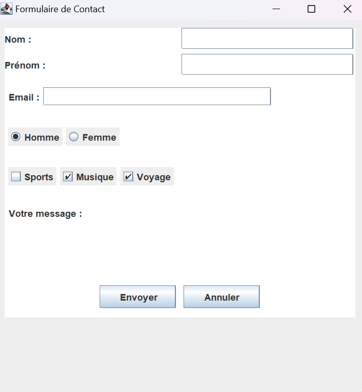

JCheckBox et JRadioButton
En Java Swing, JCheckBox et JRadioButton permettent à l’utilisateur de sélectionner des options dans une interface graphique.
1️⃣ JCheckBox
- Permet de sélectionner ou désélectionner une option.
- Peut être utilisé seul ou en groupe.
- Propriétés essentielles :
setText(String): définit le texte affiché.setSelected(boolean): coche ou décoche la case.isSelected(): retourne si la case est cochée.setBackground(Color): couleur de fond.setForeground(Color): couleur du texte.setEnabled(boolean): active ou désactive le composant.
Exemple :
JCheckBox cb1 = new JCheckBox("Option 1");
cb1.setSelected(false);
cb1.setBackground(Color.LIGHT_GRAY);
cb1.setForeground(Color.BLACK);2️⃣ JRadioButton
- Permet de sélectionner une seule option dans un groupe.
- Pour rendre les boutons exclusifs, on utilise
ButtonGroup. - Propriétés essentielles :
setText(String): texte affichésetSelected(boolean): sélectionné par défaut ou nonisSelected(): savoir si le bouton est sélectionnésetBackground(Color): couleur de fondsetForeground(Color): couleur du textesetEnabled(boolean): activer ou désactiver le bouton
Exemple :
JRadioButton rb1 = new JRadioButton("Masculin");
JRadioButton rb2 = new JRadioButton("Féminin");
ButtonGroup group = new ButtonGroup();
group.add(rb1);
group.add(rb2);
rb1.setSelected(true);
rb2.setSelected(false);3️⃣ Tableau récapitulatif
| Composant | Description | Propriétés essentielles |
|---|---|---|
| JCheckBox | Case à cocher (sélection multiple possible) | setText, setSelected, isSelected, setBackground, setForeground, setEnabled |
| JRadioButton | Bouton radio (sélection exclusive dans un groupe) | setText, setSelected, isSelected, setBackground, setForeground, setEnabled, ButtonGroup |
À retenir :
- JCheckBox permet de cocher/décocher une option.
- JRadioButton permet de choisir une seule option parmi un groupe.
- Les propriétés principales sont liées au texte, à la sélection, aux couleurs et à l’état activé/désactivé.
Exercice d'application – Formulaire de contact
- Créer une fenêtre
JFrameintitulée "Formulaire de Contact" de taille500x600et avec unFlowLayoutou unGridLayout. - Créer un
JPanelprincipal pour contenir tous les composants. - Définir sa taille avecsetPreferredSize(). - Ajouter unBorderouEmptyBorderpour espacer les éléments. - Ajouter les champs suivants dans des
JPanelséparés si nécessaire :- Nom :
JLabel+JTextField - Prénom :
JLabel+JTextField - Email :
JLabel+JTextField - Genre : 2
JRadioButton("Homme", "Femme") dans unButtonGroup - Intérêts : 3
JCheckBox("Sports", "Musique", "Voyage") - Message :
JLabel+JTextFieldou
- Nom :
- Ajouter un
JButton"Envoyer" et un autre "Annuler" en bas du formulaire. - Pour chaque panel ou composant :
- Définir la couleur de fond avec
setBackground(Color) - Définir la couleur du texte avec
setForeground(Color) - Ajouter des marges avec
setBorder(new EmptyBorder(...)) - Définir la taille préférée avec
setPreferredSize()pour les JTextField et JTextArea
- Définir la couleur de fond avec
- Organiser les panels pour que le formulaire soit lisible et centré dans la fenêtre.
- 💡 Astuce :
- Utiliser
FlowLayoutpour centrer les panels dans la JFrame - Utiliser
GridLayoutà l’intérieur des panels pour aligner les labels et champs - Mettre un
Borderou unTitledBorderpour chaque section pour un design soigné - Pour les boutons, utiliser
setPreferredSize(new Dimension(100,30))etsetMargin(new Insets(5,10,5,10))
- Utiliser
⚠️ Important : Cet exercice se concentre sur **la structure et l’organisation des composants**. Les événements (clics, validations) seront ajoutés dans un chapitre ultérieur.
